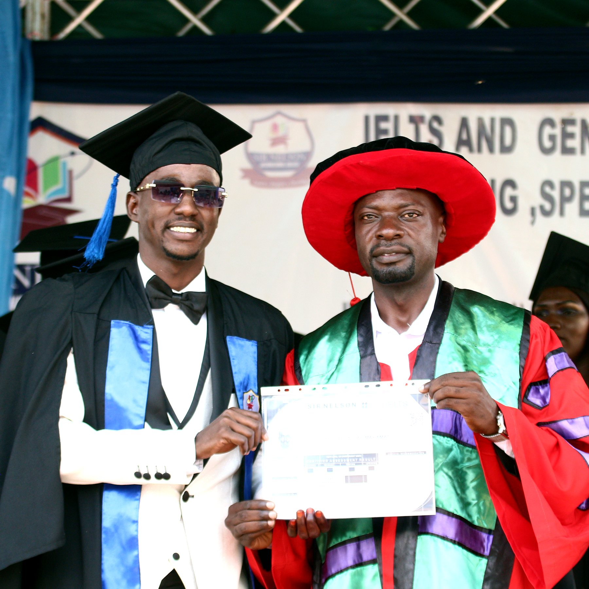

Speaking confidence
Learners practice expressing themselves clearly in front of others.
Students value clear lessons, calm correction, and practical English they can use outside class.
These graduation moments show the confidence, public speaking practice, and sense of achievement that learners build at Sir Nelson International College.
Learners practice expressing themselves clearly in front of others.

Students mark their achievements and prepare for the next goal.

The school brings learners together through study, events, and celebration.
"The IELTS writing feedback helped me understand exactly what to fix. My essays became clearer and faster."
Amina, IELTS student"General English classes gave me confidence to speak at work. The lessons are organized and respectful."
Daniel, General English learner"Book Club made reading enjoyable. I learned vocabulary and practiced sharing opinions in English."
Marina, Book Club member"The speaking practice felt serious but comfortable. I received correction without feeling embarrassed."
Omar, IELTS student"I liked the small class size and the weekly homework. It helped me keep a routine."
Priya, General English learner"The teacher explained test strategy clearly, especially reading time management and listening traps."
Hassan, IELTS studentStart with a simple registration and we will guide you to the right class.
Register Now